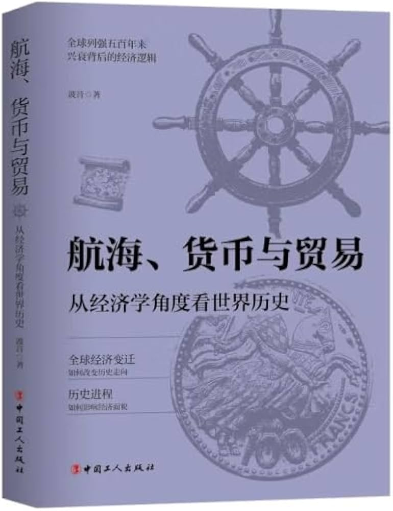

📖《航海、货币与贸易》是《粮食、运河与白银》的姊妹篇，将经济学视角扩展到世界历史。揭示了航海大发现、货币演变、全球贸易如何塑造现代世界格局。
从经济学角度看世界历史，为了解世界历史以及其中的行为做了经济解释，非常棒。
如果说《粮食、运河与白银》解释了中国历史的经济逻辑，这一本则解释了世界历史的经济逻辑。为什么是欧洲开启了航海时代？货币如何影响战争与和平？全球贸易体系是如何形成的？波音用经济学的视角，把那些看似偶然的历史事件串联成了必然的经济逻辑。两本书一起阅读，能够建立起对中西历史的经济学认知框架。